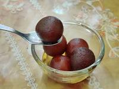

Gulab Jamun
Ingredients
1 cup milk powder
1/4 cup all-purpose flour
1/4 teaspoon baking soda
2 tablespoons ghee
1/4 cup milk, or as needed
1 cup sugar
1 1/2 cups water
4-5 green cardamom pods, crushed
Ghee or oil for frying
Sliced pistachios or almonds for garnish (optional)
Instructions
- In a mixing bowl, combine milk powder, all-purpose flour, and baking soda.
- Add ghee and mix until the mixture resembles breadcrumbs.
- Gradually add milk, a little at a time, and knead until you have a soft dough. Let it rest for 10 minutes.
- Meanwhile, prepare the sugar syrup by combining sugar, water, and crushed cardamom pods in a saucepan. Heat until the sugar dissolves and the syrup thickens slightly. Set aside.
- Divide the dough into small balls, ensuring there are no cracks on the surface.
- Heat ghee or oil in a deep frying pan over low to medium heat. Fry the dough balls until they are golden brown, turning them frequently for even coloring.
- Remove the fried balls and drain the excess oil on a paper towel.
- Soak the fried dough balls in the warm sugar syrup for at least 1-2 hours before serving.
- Garnish with sliced pistachios or almonds if desired, and serve warm or at room temperature.